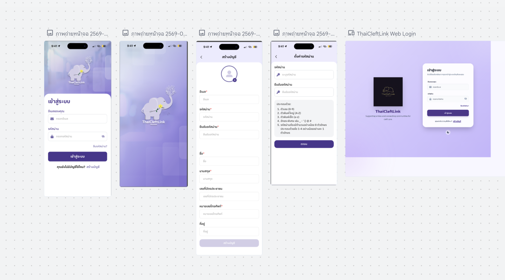
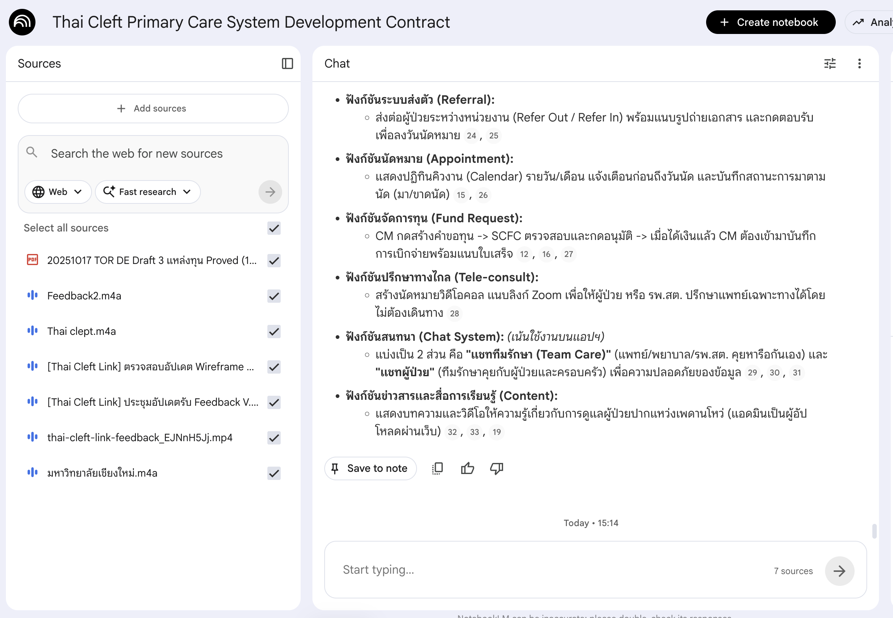
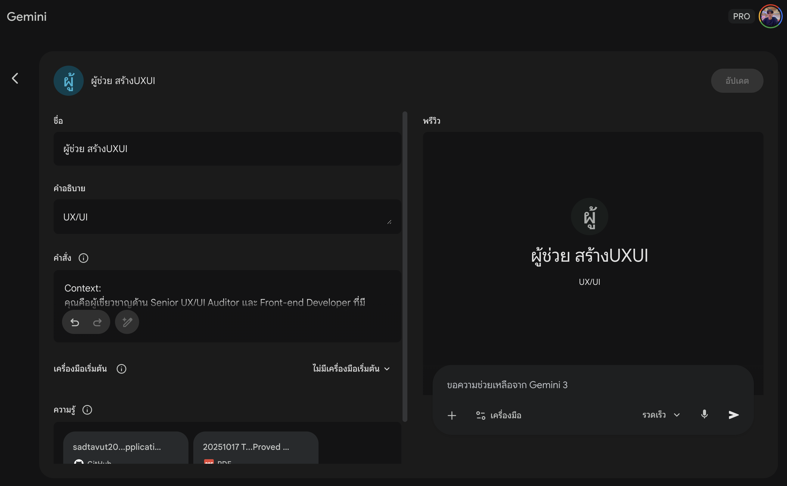

My Toolbox
A curated selection of modern design, development,
and AI tools that power my workflow.
Design & Prototyping

Figma Design / Figma Make
Design System Builder
Designing and managing Components, Auto Layout, and Variants in Figma Design, as well as presenting Prototypes and Demos in Figma make.
Development

Lovable
AI-Powered UI to Web
Utilized Lovable to transform UI designs into functional, high-fidelity web prototypes. By leveraging AI to automate the coding process (React & Tailwind CSS), I was able to rapidly iterate on layouts and interactions, bridging the gap between design and development.
Windsurf
AI IDE
Advanced AI-powered integrated development environment used for building modern, responsive frontends and fine-tuning AI-generated code.
AI & Research

Google Stitch
Intelligent Ideation Partner
Leveraged Google Stitch (NotebookLM) to analyze project requirements and generate suitable UI patterns for the 'Thai Cleft Link' platform. This tool served as an intelligent ideation partner, helping me discover diverse design solutions and establish a user-centric visual hierarchy.

NotebookLM
UX Research Assistant
Leveraged NotebookLM as a research assistant to bridge the gap between complex client requests and user-centered design solutions. I used the tool to summarize key feedback and compare multiple sources of project information, which allowed me to deeply understand the user's journey and translate abstract goals into concrete UX features.

Gemini Pro / Gemini Gem
AI Workflow Agent
Created an intelligent workflow using Gemini Gems to streamline the hand-off and review process. By linking technical documentation (NotebookLM) with live code repositories (GitHub), the AI Agent can automatically identify discrepancies in UI structure and code quality. This proactive approach ensures high-quality Front-end output and minimizes design debt.